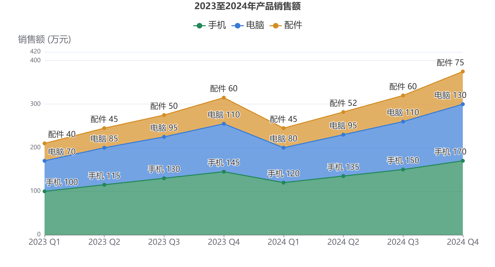
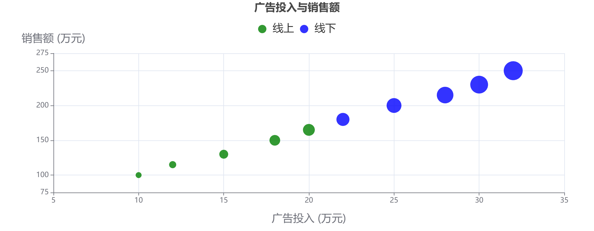

作品集
/ 实验报告
全部报告
数据可视化 / 折线与散点
折线图与散点图
单系列折线、堆叠面积与分组散点的综合练习。
运行实验 ↗
下载报告 ↓
实验目的
掌握趋势、累积关系与二维分布的可视化表达。
实现要点
PDF 报告包含四个实验、完整配置、六张运行截图和结果分析。
散点大小包含默认、固定 8 px 和动态大小三种呈现方式。
运行结果

图 1 堆叠面积折线图
下载截图 ↓

图 2 散点图运行效果
下载截图 ↓
报告与附件
完整 PDF 报告 ↓